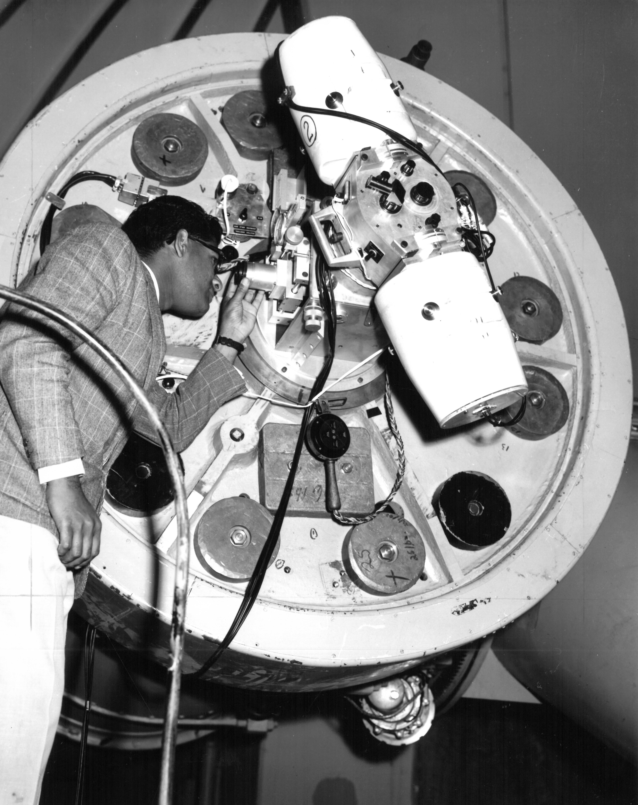

Personnel Records
Original research materials: 1972–1977
Digitization initiative: 2003–2004
Personnel records were reconstructed from payroll documents, staff directories, correspondence, photographic materials, and surviving administrative files.
Several employment records remain incomplete.
Recovery integrity: 87%
Surviving administrative records identify twelve individuals employed by or formally associated with the North Star Project between 1972 and 1977.
The following directory contains personnel whose records are substantially represented in the recovered archive.
| ID | Name | Position | Service | Status |
|---|---|---|---|---|
| NSP-P01 | Dr. Elias Mercer | Project Director | 1972–1977 | Verified |
| NSP-P02 | Dr. Miriam Vale | Observational Astronomer | 1972–1975 | Verified |
| NSP-P03 | Thomas Bell | Optical Technician | 1972–1977 | Verified |
| NSP-P04 | Daniel Harker | Night Observation Assistant | 1973–1974 | Incomplete |
| NSP-P05 | Margaret Ellis | Administrative Coordinator | 1972–1976 | Verified |
| NSP-P06 | Robert Venn | Photographic Technician | 1973–1975 | Verified |
Position: Project Director
Service: January 1972 – June 1977
Mercer supervised research operations, funding, observational scheduling, and the project's final administrative closure.
Surviving correspondence indicates that Mercer reduced overnight observation activity during the summer of 1975.
Reason given: instrument maintenance and personnel availability.
Position: Observational Astronomer
Service: March 1972 – February 1975
Vale conducted and reviewed a substantial portion of the project's long-duration photographic observations.
Her initials appear on observation records 74-039, 74-041, and 74-044.
No resignation letter or termination document was located in the surviving personnel archive.
Position: Optical Technician
Service: February 1972 – June 1977
Bell maintained telescope alignment systems, optical assemblies, photographic equipment, and mechanical tracking components.
An equipment report dated April 12, 1974 states that the primary telescope was inspected following reports of positional inconsistency.
Bell reported:
Position: Night Observation Assistant
Service: September 1973 – [UNCONFIRMED]
Harker appears regularly on overnight staffing schedules beginning September 1973.
His initials appear on Observation 74-047 dated April 11, 1974.
Harker's final surviving payroll entry is dated April 1974.
No separation paperwork was recovered.
Personnel file status: INCOMPLETE
The following photograph was cataloged with personnel materials during the 2003 digitization initiative.

No positive identification could be established from the surviving personnel photographs.
A handwritten notation on the reverse of the original print reads:
The original personnel index indicates twelve individuals formally associated with the North Star Project.
Surviving payroll and administrative records account for eleven.
No corresponding personnel file has been located for the remaining index entry.
The name field associated with that entry is unreadable.
Position: OBSERVER